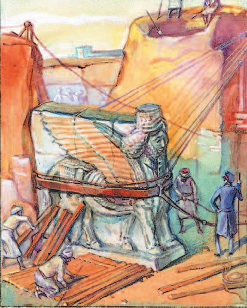
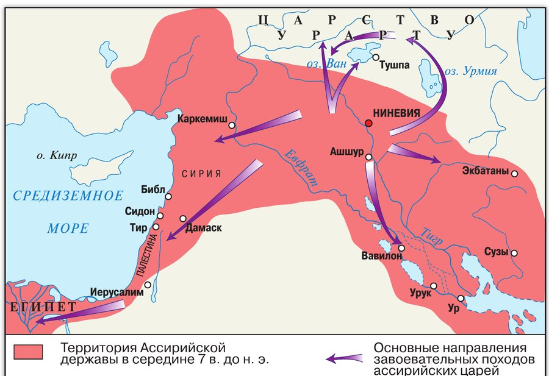
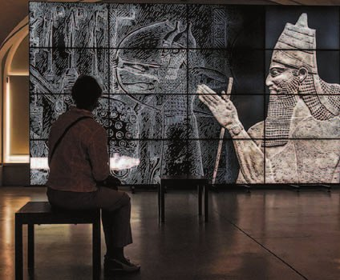
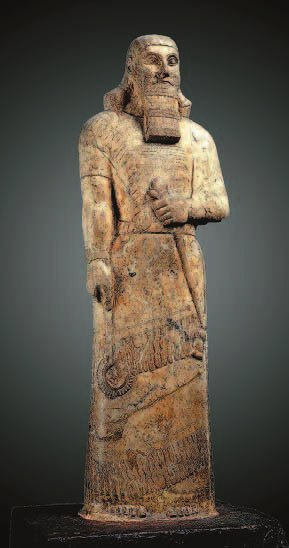

Природа и хозяйство
В 3-м тысячелетии до н. э. в среднем течении реки Тигр был основан город Ашшур. От него пошло название народа — ассирийцы, и страны — (это территория современного Ирака).
Здесь было холоднее и дожди выпадали чаще, чем на юге Месопотамии. Говорили ассирийцы на диалекте аккадского языка: они происходили от части аккадцев, расселившихся не в Шумере, а на Тигре.
Ассирийцы занимались земледелием и скотоводством. Со временем они освоили производство и делали из него орудия труда и оружие. Железными орудиями распахивали твёрдые почвы, рыли колодцы.
Через земли Ассирии проходили торговые пути: ассирийские купцы выгодно торговали с Сирией и странами Малой Азии.
В VII (7) веке до н. э. столицей Ассирии была . Как и все правители Древнего Востока, ассирийские цари строили великолепные дворцы и храмы. Стены дворцов складывали из кирпичей, покрытых цветной глазурью, и украшали статуями крылатых львов, сценами охоты и военных действий.
В 3-м тысячелетии до н. э. в среднем течении реки Тигр был основан город Ашшур, давший название народу — ассирийцы и стране — Ассирия (территория современного Ирака). Здесь было холоднее и дожди выпадали чаще, чем на юге Месопотамии. Языком населения был диалект аккадского языка — ассирийцы происходили от части племён аккадцев, расселившихся не в Шумере, а на Тигре.
Ассирийцы занимались земледелием и скотоводством. Со временем они освоили производство железа и делали из него орудия труда и оружие. С помощью железных орудий труда распахивались твёрдые почвы, рылись колодцы и т. п.
Через земли Ассирии проходили торговые пути. Ассирийские купцы вели выгодную торговлю с Сирией и странами Малой Азии.
В VII (7) веке до н. э. столицей Ассирии была Ниневия. Как и все правители Древнего Востока, цари Ассирии строили великолепные дворцы и храмы в честь богов. Стены дворцов были сложены из кирпичей, покрытых цветной глазурью, и украшены статуями крылатых львов, сценами охоты и военных действий.

▲ Найди на карте Ниневию и Ашшур. Посмотри, как далеко от них уходили стрелки походов.
- Чем отличалось хозяйство Ассирии от хозяйства Древнего Египта?
1. В Ассирии дожди шли чаще, чем на юге Месопотамии. Почему это важно для земледельца?
2. Через Ассирию проходили торговые пути. Это преимущество или опасность?
3. Стены дворцов украшали сценами охоты и военных действий. Что это говорит о том, чем гордились ассирийские цари?
Завоевательные походы
Ассирийцы были воинственным народом, и их цари постоянно воевали с соседями.
Армия ассирийцев считалась лучшей на Востоке. Они первыми начали использовать наряду с пехотой, важной частью войска были колесницы. В состав армии входили отряды разведчиков и отряды для прокладки дорог и наведения мостов.
Ассирийцы одними из первых стали применять железное оружие — мечи и боевые топоры. Защитой служили круглые щиты, обитые железными бляхами; шлемы продолжали делать из бронзы. Для штурма городов использовались .
Примерно с 1350 года до н. э. ассирийская армия начала завоевательные походы, и за несколько столетий были покорены многие соседние страны.
При царе (745—727 годы до н. э.) Ассирия превратилась в огромную военную державу из покорённых народов. Царь говорил, что правит во всех странах «от Верхнего моря (Средиземного), где садится солнце, до Нижнего моря (Персидского залива), где солнце поднимается».
Население городов, которые сопротивлялись, ждала страшная расправа — поэтому многие города сдавались добровольно. Покорённые народы ассирийцы облагали огромной .
Ассирийцы были воинственным народом. Их цари постоянно воевали с соседями. Армия ассирийцев считалась лучшей на Востоке. Они первыми начали использовать конницу наряду с пехотой. Важной частью войска были колесницы. В его состав также входили отряды разведчиков, отряды для прокладки дорог, наведения мостов.
Ассирийцы одними из первых стали применять железное оружие: мечи и боевые топоры. Защитными средствами служили круглые щиты, обитые железными бляхами. Шлемы продолжали делать из бронзы. Для штурма городов использовались тараны и осадные башни.
Приблизительно с 1350 года до н. э. ассирийская армия начала завоевательные походы. За несколько столетий были покорены многие соседние страны. При царе Тиглатпаласаре III (3) (745—727 годы до н. э.) Ассирия превратилась в огромную военную державу, в состав которой входили покорённые народы. Царь говорил, что правит во всех странах «от Верхнего моря (Средиземного), где садится солнце, до Нижнего моря (Персидского залива), где солнце поднимается».
Население городов, оказывавших сопротивление, ждала страшная расправа. Многие города сдавались добровольно. Покорённые народы ассирийцы облагали огромной данью.

- Почему ассирийцы жестоко расправлялись с жителями захваченных территорий?
4. Зачем армии отряды, которые прокладывают дороги и наводят мосты, — они же не воюют?
5. Жестокая расправа над сопротивлявшимися городами — это жестокость ради жестокости или расчёт?
6. Тиглатпаласар III говорил, что правит «от Верхнего моря до Нижнего». Посмотри на карту: о каких морях речь?
7. Ассирийцы первыми применили конницу. Чем всадник лучше колесницы?
Падение державы
Народы, покорённые Ассирией, ждали момента, чтобы отомстить завоевателям.
В VII (7) веке до н. э. с востока на Ассирию напал иранский народ — , сплотившийся в единое царство Мидию. Вавилон восстал против Ассирии и заключил с Мидией союз. Вместе они разгромили армию ассирийского царя и осадили столицу.
Город окружала неприступная стена — с ней не справились даже мощные тараны. Тогда союзники запрудили реку Тигр, и её воды обрушились на город. Так повествуют древние источники.
В 612 году до н. э. Ниневия пала. Города Ассирии были стёрты с лица земли, а население расселилось и смешалось с другими народами. Ассирийская держава прекратила своё существование.
Народы, покорённые Ассирией, ждали момента, чтобы отомстить завоевателям. В VII (7) веке до н. э. с востока на Ассирию напал иранский народ — мидийцы, сплотившийся в единое царство, Мидию. Вавилон восстал против Ассирии и заключил союз с Мидией. Совместно они разгромили армию ассирийского царя и осадили его столицу.
Город окружала неприступная стена, с которой не могли справиться даже мощные тараны. Тогда союзники запрудили реку Тигр, и её воды обрушились на город. Так повествуют древние источники.
В 612 году до н. э. Ниневия пала. Города Ассирии были стёрты с лица земли, а население расселилось и смешалось с другими народами. Ассирийская держава прекратила своё существование.
- Как ты думаешь, почему Ассирийская держава оказалась непрочной?
8. Почему против Ассирии объединились именно Мидия и Вавилон — два совсем разных противника?
9. Города Ассирии не просто взяли, а стёрли с лица земли. Почему победители поступили так?
10. Ассирия покоряла соседей семьсот лет, а рухнула почти сразу. Сравни её с Египтом (§5, §8): почему у них так по-разному?

Сокровища библиотеки
Царь Ассирии (668—627 годы до н. э.) не только воевал и покорял соседние народы, но и построил в Ниневии библиотеку. В ней было собрано больше 30 тысяч .
В них содержались сведения по медицине, астрономии и математике, царские указы, законы, дворцовые записи, лучшие литературные произведения, словарь и поэма о Великом потопе.
Глиняные «книги» держали в строгом порядке на стеллажах, а над каждым прикрепляли табличку с названием темы.
Как делали табличку? Сначала готовили глину: вымешивали, потом формовали брикеты. По готовой заготовке писец наносил знаки заострённой палочкой. Потом табличку обжигали — и она становилась долговечной.
А сохранилось всё это по счастливой случайности. Завоеватели не видели ценности в клинописных табличках и не стали забирать их как добычу. Множество табличек так и осталось лежать под землёй, затянувшей развалины Ниневии, — их обнаружили археологи лишь в XIX (19) веке.
Царь Ассирии Ашшурбанапал (668—627 годы до н. э.) не только воевал и покорял соседние народы, но и построил в Ниневии библиотеку, где было собрано более 30 тысяч глиняных табличек. В них содержались сведения по медицине, астрономии, математике, царские указы, законы, дворцовые записи, лучшие литературные произведения, словарь, поэма о Великом потопе. В библиотеке хранилось много бесценных текстов. Глиняные «книги» содержались в строгом порядке на стеллажах, над каждым из которых прикреплялась табличка с наименованием темы.
Для изготовления табличек сначала готовили глину: её вымешивали, потом формовали брикеты. Когда заготовка была готова, писец при помощи заострённой палочки наносил знаки. Потом табличку обжигали, и она становилась долговечной.
Завоеватели, к счастью для учёных, не видели ценности в клинописных табличках. Многие из них сохранились до наших дней. После падения Ниневии их не стали забирать в качестве добычи. Поэтому множество из них осталось лежать под затянувшей развалины Ниневии землёй, они были обнаружены археологами лишь в XIX (19) веке.
Отрывок из книги российского историка И. Дьяконова «Древний Восток».
Стены города необыкновенно крепки; к тому же они усилены рвами, башнями, дополнительными пристройками, всякого рода укреплениями…
Дворец окружён широким пустым пространством. Он воздвигнут на высокой, облицованной кирпичом платформе и похож на крепость…
На этих улицах нет прекрасных домов с великолепными фасадами, нет также стройных рядов деревьев; видны только глухие белёные стены, да кое-где из внутреннего двора перевесится крона дерева.
Зато вдали, над сутолокой пёстрой толпы, над алтарями на перекрёстках, над плоскими крышами, где сушатся жёлтые тыквы, инжир и виноград, видны высокие, украшенные нишами и выступами белые стены храмов с многоярусными башнями и стены царского дворца.
- Какие знания хранила библиотека Ашшурбанапала?
11. Почему для учёных оказалось удачей, что завоеватели не тронули таблички?
12. Над каждым стеллажом висела табличка с названием темы. Зачем, если книг всего 30 тысяч?
13. Ашшурбанапал воевал и одновременно собирал библиотеку. Как это уживалось в одном человеке?
Подведём итоги
- Какие новые виды вооружения использовали в армии Ассирии?
- Подумай, почему захватчики полностью уничтожили столицу Ассирии.
- Как ты думаешь, в чём значение открытия библиотеки Ашшурбанапала для изучения истории Древнего мира?
Сформулируй ответ на главный вопрос параграфа — почему Ассирийская держава оказалась непрочным государством? Приведи два-три довода.
Проверь себя
Нажимай по очереди — от самого древнего события к самому близкому к нам.
1. От чего пошло название страны Ассирия?
2. Что ассирийцы применили первыми на Востоке?
3. Из чего ассирийцы делали шлемы?
4. Как союзникам удалось взять Ниневию?
5. В каком году пала Ниневия?
6. Почему таблички из библиотеки уцелели?
Расскажи вслух
Природа и хозяйство Ассирии
- Город Ашшур в среднем течении Тигра дал имя народу и стране; холоднее и дожди чаще, чем на юге Месопотамии.
- Земледелие и скотоводство; освоили железо — орудия труда и оружие; железом распахивали твёрдые почвы и рыли колодцы.
- Через страну шли торговые пути; столица Ниневия, дворцы из глазурованного кирпича со статуями крылатых львов.
Армия и завоевания
- Лучшая армия Востока: первыми применили конницу, были колесницы, разведчики, отряды для дорог и мостов.
- Железные мечи и топоры, круглые щиты с бляхами, бронзовые шлемы, тараны и осадные башни.
- С 1350 года до н. э. походы; при Тиглатпаласаре III (745—727) — держава «от Верхнего моря до Нижнего»; расправы и огромная дань.
Падение державы
- Покорённые ждали момента отомстить; мидийцы напали с востока, Вавилон восстал и заключил с ними союз.
- Армию царя разгромили, столицу осадили; стену не взяли даже тараны — тогда запрудили Тигр.
- 612 год до н. э.: Ниневия пала, города стёрли с лица земли, население смешалось с другими народами.
Библиотека Ашшурбанапала
- Царь 668—627 годов до н. э. построил в Ниневии библиотеку: больше 30 тысяч глиняных табличек.
- Медицина, астрономия, математика, указы, законы, дворцовые записи, литература, словарь, поэма о Великом потопе; порядок на стеллажах с подписями.
- Таблички делали из вымешанной глины, писали палочкой, обжигали. Уцелели потому, что завоеватели не сочли их добычей; найдены в XIX веке.